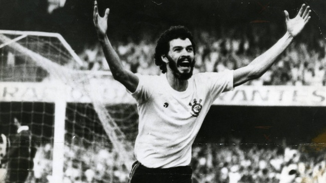
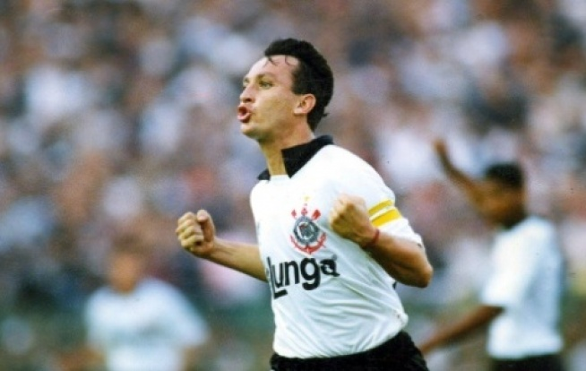
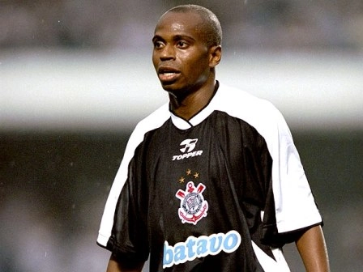
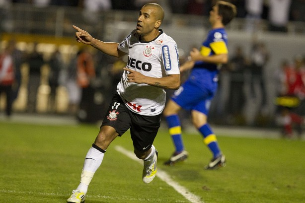
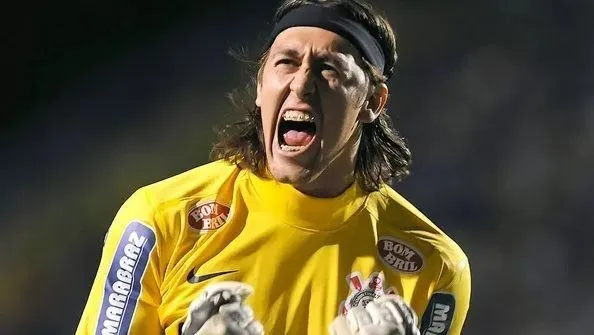

OS MAIORES ÍDOLOS DO TODO PODEROSO TIMÃO:
MANUEL NUNES:
Manuel Nunes, o Neco, foi o primeiro ídolo do Corinthians por sua trajetória de quase 20 anos no clube, onde conquistou oito títulos paulistas e marcou 240 gols, sendo um dos maiores artilheiros da história do time. Além disso, se destacou na seleção brasileira e foi o primeiro jogador do Corinthians homenageado com um busto, refletindo a admiração da torcida pela sua garra e dedicação.

SOCRÁTES:
Como jogador, atuou como meio-campista e é considerado um dos grandes craques do futebol brasileiro da década de 1980, grande líder democrático lutando contra a ditadura e defendendo a redemocratização do país. Sempre foi um dos “bando de loucos” e bastante lembrando por ser um fantástico médico

NETO:
Craque Neto foi um grande jogador pelo meio-campo, com fantásticos chutes e cobranças de bola parada, conquistando vários títulos com performance incrível como o campeão brasileiro de 1990, paulista de 1991, supercopa do Brasil de 1991. Um verdadeiro maestro do time do Corinthians durante o tempo em que esteve na equipe, que hoje tem o seu programa na Bandeirantes: Os Donos da Bola e O Apito Final..

Edílson Capetinha:
Edilson começou pelo Corinthians em 1997 e, logo no ano seguinte, já brilhou no Brasileirão daquele ano, conquistando o segundo lugar e sendo o melhor jogador da competição. Em 1999, proporcionou um dos momentos mais marcantes na história do Corinthians, debochando do Palmeiras com diversas firulas e embaixadinhas, e foi de extrema importância na conquista do primeiro Mundial, com direito a gol no Real Madrid.

Emerson Sheik:
Indo para o Corinthians em 2011, ninguém imaginava o que o Sheik faria pelo time no ano seguinte. Em 2012, um ano bem lembrado pelos corinthianos por conta dos títulos, Emerson Sheik foi destaque e essencial em todos eles: primeiro título da Libertadores, com uma atuação fenomenal, principalmente contra o Santos e o Boca Juniors, além de ajudar muito o time no título mundial contra o Chelsea. Porém, foi uma passagem curta, pois em 2014 já não era mais aproveitado e acabou saindo do time.

Cássio:
Para muitos, o maior ídolo do clube. Cássio, se não o maior ídolo, é com certeza o maior goleiro do time e está no top 3. Foi um grande líder, fazendo diversas defesas milagrosas desde sua estreia em 2011 até 2023, quando acabou saindo por não conseguir mais atuar em alto nível como antes. Porém, isso não apaga o que o goleiro fez pelo clube, com títulos como Brasileirão 2015 e 2017, Paulistas 2013, 2017, 2018 e 2019, Libertadores 2012 e Mundial 2012.